Key Takeaways
- Controls whether Automatic Remediation is enabled on hotpatch-enrolled devices.
- Applies only to devices with hotpatch updates installed.
- Enabled policy: Turns on Automatic Remediation for the device.
- Disabled or not configured: Keeps Automatic Remediation turned off.
Hey, let’s discuss about how to configure Automatic Remediation for Windows Hotpatch Devices using Intune. This policy setting determines whether Automatic Remediation is enabled on a device that is enrolled for hotpatch updates. It only applies to devices that have hotpatch updates installed; devices without hotpatch updates are not affected by this setting.
Table of Contents
If the policy is enabled, Automatic Remediation is turned on for eligible hotpatch-enrolled devices. If the policy is disabled or not configured, Automatic Remediation remains turned off on those devices.
How to Create a Policy in Intune
To create Enable Hotpatch Auto Remediation policy, the first step that you must do is to sign in to the Microsoft Intune Admin Centre. After clicking on the Device on the left side of the screen, select Configuration and then click Create and select New Policy.

Create a Profile
When you click on the New Policy, a box will appear in which you can specify the platform and profile type. From that, choose the platform as Windows 10 and later and profile type as Settings Catalog. Then, click Next to continue.

In the Basics tab, enter Enable Hotpatch Auto Remediation as the policy name. You can add a description if needed (To Enable Hotpatch Auto Remediation), but it is optional. After entering the details, click Next to proceed.
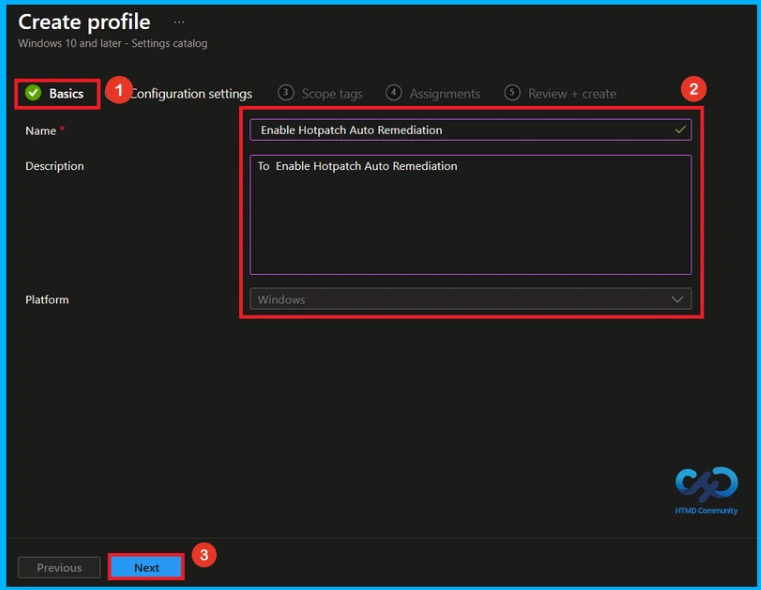
On configuration settings, click + Add settings. This opens the Settings picker. Here, search Hotpatch Auto Remediation on the search bar or select the category System. Then choose the Enable Hotpatch Auto Remediation policy.
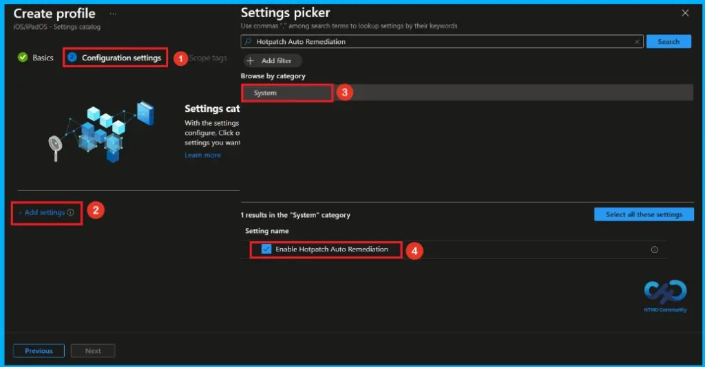
Once you have selected the Enable Hotpatch Auto Remediation policy and closed the Settings picker, the policy will appear on the Configuration settings page. By default, Automatic Remediation is not enabled. If you do not want to change the default setting, click Next to continue.
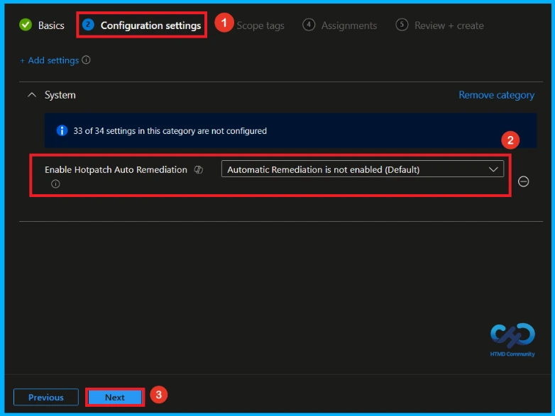
If you want to enable this policy, select Automatic Remediation is enabled from the drop-down menu. This configures the Enable Hotpatch Auto Remediation policy to automatically remediate eligible updates. After configuring the setting, click Next to proceed.
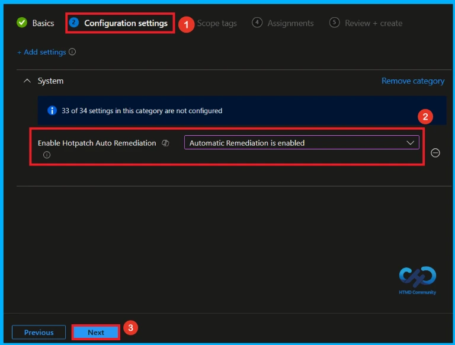
What is Scope Tag
In the Scope tags section, you can assign one or more scope tags to the policy so that only specific IT teams or administrators have access to it. To add a scope tag(Not mandatory), click Select scope tags, choose the required tag, and then click Next.
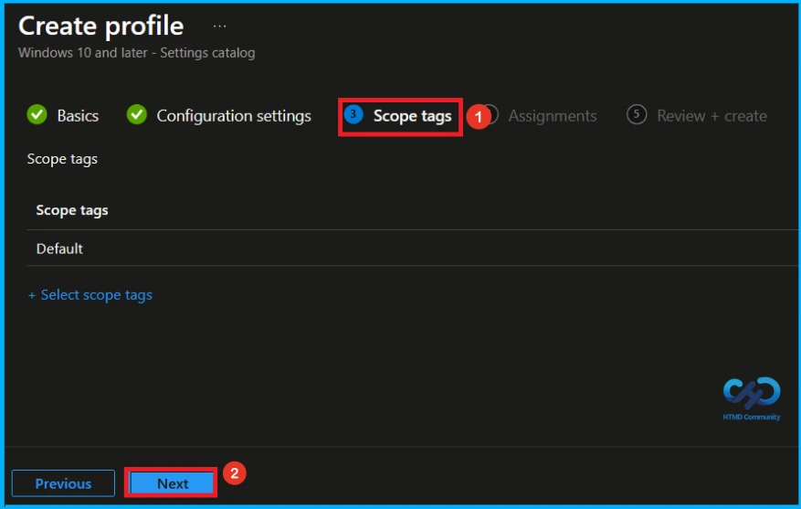
In the Assignments section, click Add groups under Included groups and select the user or device groups(Here, i choose HTMD – Test Policy) to which you want to apply the policy. After selecting the required groups, click Next to proceed.

Final Step of Policy Creation
At the Review + create step, review the summary of the configured settings. If you need to make any changes, click Previous. Once you have verified the configuration, click Create to finish. A notification will confirm that the Enable Hotpatch Auto Remediation created successfully.
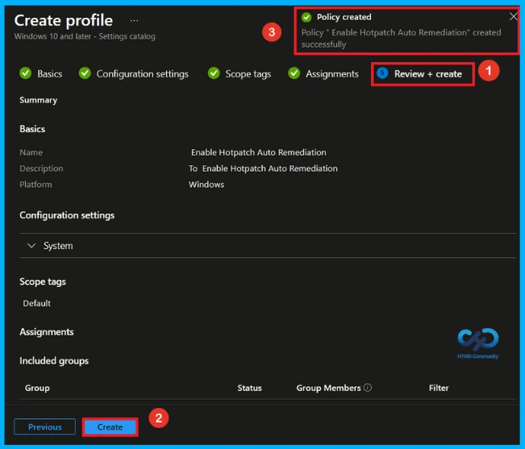
Monitoring Status
To check whether the policy is successfully applied, sign in to the Microsoft Intune admin center and go to Devices > Configuration profiles. Select the Enable Hotpatch Auto Remediation policy from the list. This opens the policy overview page, where you can see a quick summary of its deployment status.
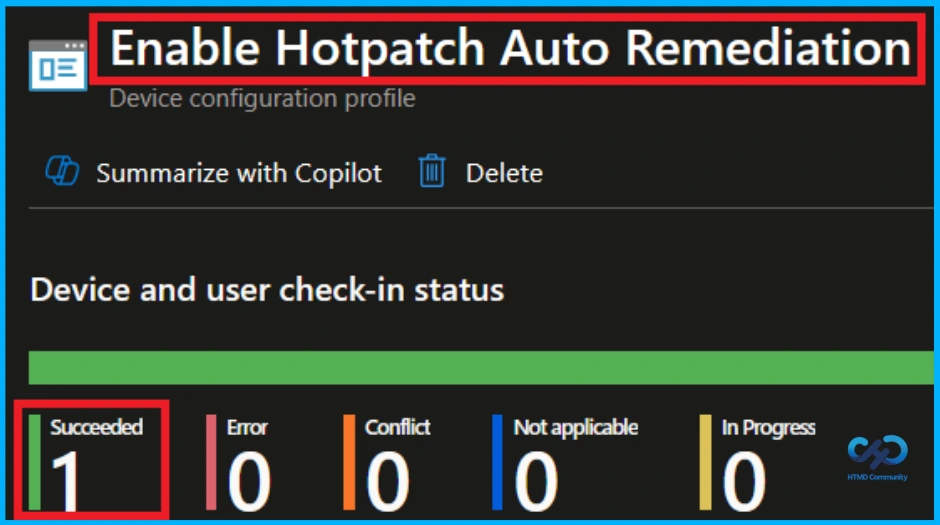
Client Side Verification
To confirm if a policy has been applied, use the Event Viewer on the client device. Go to Applications and Services Logs > Microsoft >Windows >Device Management > Enterprise Diagnostic Provider > Admin. From the list of policies, use the Filter Current Log option and search for Intune event 813.
MDM PolicyManager: Set policy int, Policy: EnableHotpatchAutoRemediation), Area: (System),
EnrollmentID requesting merge: (EB427D85-802F-46D9-A3E2-D5B414587F63), Current User:
(Device), Int: (0x1), Enrollment Type: (0x6), Scope: (0x0).
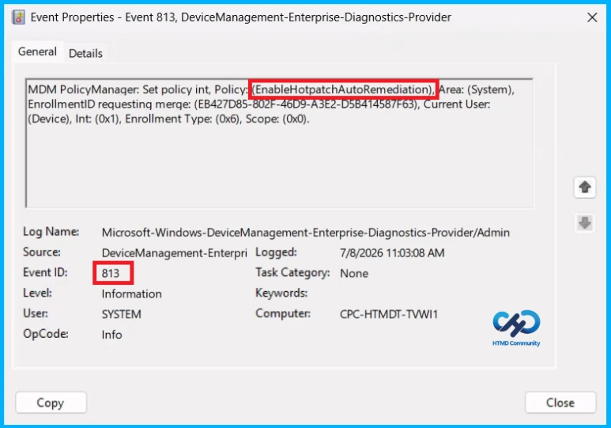
Configuration Service Provider (CSP)
The Policy Configuration Service Provider (CSP) is used by organizations to manage and configure settings on Windows 10 and Windows 11 devices. It provides information about the policy, including its description framework properties, and allowed values.
Description framework properties:
- Format – int
- Access Type – Add, Delete, Get, Replace
- Default – 0
Allowed Values
| Value | Description |
|---|---|
| 0(Default) | Automatic Remediation isn’t enabled (Default) |
| 1 | Automatic Remediation is enabled |
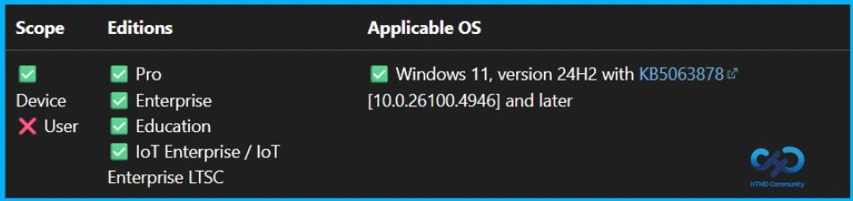
To stop the Enable Hotpatch Auto Remediation policy from applying to certain users or devices, remove the assigned groups. Go to Devices > Configuration profiles, select then Enable Hotpatch Auto Remediation policy, and open Assignments. Remove the required group from the assignment list.
For detailed information, you can refer to our previous post – Learn How to Delete or Remove App Assignment from Intune using by Step-by-Step Guide.
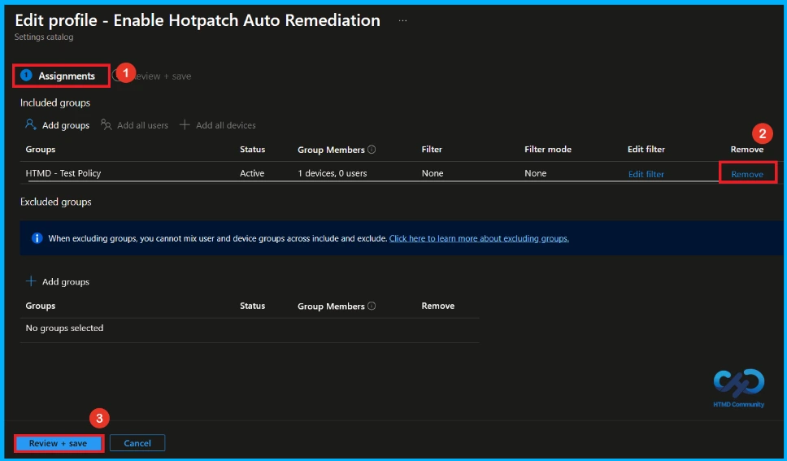
If the policy is no longer required, you can delete it completely from Intune. Navigate to Devices > Configuration profiles, select the Enable Hotpatch Auto Remediation policy, and click Delete. Deleting the policy permanently removes it from Intune and stops it from applying to all devices.
For detailed information, you can refer to our previous post – Learn How to Delete or Remove App Assignment from Intune using by Step-by-Step Guide.
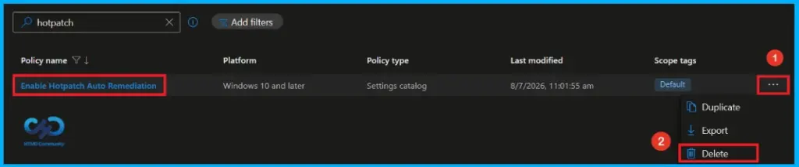
Need Further Assistance or Have Technical Questions?
Join the LinkedIn Page and Telegram group to get the latest step-by-step guides and news updates. Join our Meetup Page to participate in User group meetings. Also, join the WhatsApp Community and the Whatsapp channel to get the latest news on Microsoft Technologies. We are there on Reddit as well.
Author
Anoop C Nair has been Microsoft MVP from 2015 onwards for 10 consecutive years! He is a Workplace Solution Architect with more than 22+ years of experience in Workplace technologies. He is also a Blogger, Speaker, and Local User Group Community leader. His primary focus is on Device Management technologies like SCCM and Intune. He writes about technologies like Intune, SCCM, Windows, Cloud PC, Windows, Entra, Microsoft Security, Career, etc